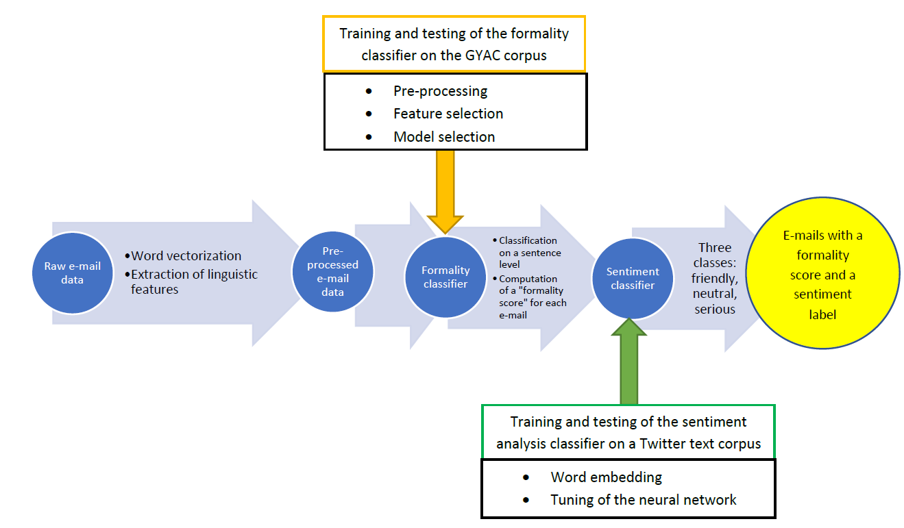

NLP: identify which writing style performs best for hotels' marketing emails
As part of my masters' thesis, I was given the opportunity to work with For-Sight, a hospitality-focused CRM platform based in Edinburgh. They provide numerous hotels with digital and analytical tools that allow them to track the engagement and efficacy of their marketing campaigns. In particular, e-mails remain the privileged communication channel between hotels and their clients and hotels are looking to optimize their communication to drive strong customer engagement. For this purpose, I was tasked to work on a text analysis tool that will categorize e-mails, assess the marketing performance of each category and make it possible for hotels to adapt their strategy.
I developed a dual classification method that combines two common subgenre of text classification problems. The first model designed is a formality classifier, which computes a quantitative measure of how formal a text is - given the features of that text. This model was trained and tested on the Grammarly Yahoo Answers corpus composed of 110 000 sentences, and then applied onto the e-mails. The usage of an outside corpus as an intermediate to tune the formality classifier was mandatory, as it is a supervised learning method that logically requires pre-labelling of the text, and the manual labelling of e-mails would have been too laborious.
The second model is a sentiment analysis classifier, which aims at adding an extra layer on top of the formality class. It is capable of grasping the polarity of the words used (positive/negative) and the tone in writing. It was trained and tested on a Twitter database composed of 40 000 tweets conveying different feelings. In total, four classes of sentiments have been used in this study: [‘SERIOUS’, ‘HAPPY’, ‘FUN’, ‘CARING’]. Although marketing e-mails are mostly stripped of any strong sentiments, there are perceivable differences in the way hotels with different strategies interact with their clients.
Applied together, those models constitute a classification that is detailed enough to bring interesting insights to the marketing teams in the hospitality business. The results of the application on the dual model on an e-mails database of partners hotels from For-Sight indicate that it is capable of accurately grasping the preferences of each hotel’s clientele. It effectively allows hotel to adapt their communication style depending on the customer engagement metrics showcased by each writing style.
Try it out !
Have a look at the output of the dual classification model for a few of the hotels that I worked on. Please note that the data points have been limited on purpose.
Formality classifier
The formality classifier is a Multinomial Naïve Bayes model. It takes the numerical representation of a sentence as input and returns the probability that the sentence belongs into the "Formal" or "Informal" class.
To represent a sentence numerically the best set of features was found to be a set of 6 linguistic statistics, which are described below.
| Feature | Details |
|---|---|
| Linguistic Statistics | Case:
|
Lexical:
|
|
| Punctuation: number of "? ; … ! " in the sentence |
Finally, to compute a formality score at e-mail level, we need to consider an e-mail as an ensemble of sentences. The formality score that will be computed for each e-mail is the weighted average of the probabilities of its sentences being formal. In mathematical terms, for an e-mail of length 𝐿 characters, made of 𝑛 sentences, the formality score 𝐹 is:
\[ F=\sum_{i=1}^{n}P(sentence_i=formal)\times \frac{len(sentence_i)}{L} \]
Sentiment classifier
For the sentiment classifier model, I combined Convolutional Neural Network (CNN) and Long-Short Term Memory (LSTM) networks that are common models found in the literature. Feeding as input into those models, the words from the emails were turned into a numerical array thanks to the GloVe word embeddings. More specifically, I used the 200-dimensions GloVe vectors that were trained on a corpus of 27 billion tweets (most suited to our case of use since we are also working on tweets). It is one of the best performing embeddings and was introduced in 2014 by Pennington et al. from Stanford University.
The intuition behind using CNNs on text relies on the fact that text is structured and organized; As such, we can expect a CNN model to discover and learn patterns that would otherwise be lost in a classic feedforward network that do not include the filtering step. For example, it might be able to distinguish that using "down" in the context of "down to earth" is actually of positive sentiment as opposed to other phrases such as "feeling down". Furthermore, it will be able to extract these features regardless of where they occur in the sentence.
Long-Short Term Memory networks are a type of Recurrent Neural Network architecture that is designed to remember previously read values for any given period of time. LSTMs usually contain three gates that control the flow to and from their memories. The “input gate" controls the input of new information to the memory. The “forget gate" controls how long certain values are held in memory. Finally, the “output gate" controls how much the value stored in memory affects the output activation of the block. Intuitively, the benefit of using LSTMs when doing any type of text analysis is that the network will remember what it has read previously, and thus is can have a better understanding of the input.
The final architecture of the model deployed to classify sentiments is :
- Initialize 1 LSTM layer with the embeddings obtained from GloVe vectors: this layer is supposed to remain with frozen weights to conserve the information of the pre-trained GloVe vectors.
- Add a second LSTM layer with empty embeddings which weights will get adjusted by the information extracted from the training phase.
- Add 5 CNN layers, each of them having 20 filters. We use the L2 norm as regularization metric and the ReLu function as activation function.
- The final layers are a MaxPooling layer and a final fully-connected layer that creates a 4-dimension output with a softmax activation function, each of those dimensions indicating the probability of belonging to one of the four sentiments SERIOUS, HAPPY, FUN and CARING.